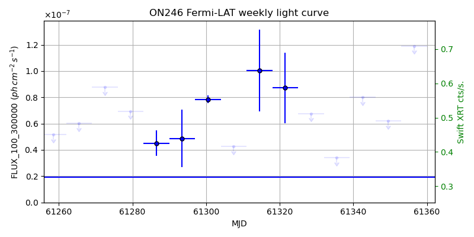

LAT Lightcurve site: https://fermi.gsfc.nasa.gov/ssc/data/access/lat/msl_lc/source/ON_246
Swift site: https://www.swift.psu.edu/monitoring/source.php?source=ON246
NED: Query
Time of last update of this page: UT: 2026-11-20 16:25 (MJD: 61364.684)
| Property | Value |
|---|---|
| R.A. | 12:30:14.16 |
| Dec. | 25:18:07.2 |
| z | 0.135 |
| 3FGL SpectrumType | PowerLaw |
| 3FGL PL Index | 2.24 |
| 3FGL Flux_100_300000 | 1.92e-08 1 / (s cm2) |
| 3FGL Flux_1000_300000 | 1.12e-09 1 / (s cm2) |
| 3FGL Flux >200 GeV | 1.60e-12 1 / (s cm2) |
| 3FGL Extrap. Crab >200 GeV | 0.01 |
| 3FGL Flux After EBL Absorption >200GeV | 9.50e-13 1 / (s cm2) |
| 3FGL EBL Crab Fraction >200GeV | 0.00 |
| MJD | dMJD | Flux | dFlux | Frac3FGL | FracCrab>200GeV | EBLFracCrab>200GeV |
|---|---|---|---|---|---|---|
| 61359.50 | 0.50 | 4.66e-07 | 0.00e+00 | 0.00 | 0.00 | 0.00 |
| 61360.50 | 0.50 | 9.51e-08 | 0.00e+00 | 0.00 | 0.00 | 0.00 |
| 61361.50 | 0.50 | 3.27e-07 | 0.00e+00 | 0.00 | 0.00 | 0.00 |
| 61362.50 | 0.50 | 8.09e-08 | 0.00e+00 | 0.00 | 0.00 | 0.00 |
| 61363.50 | 0.50 | 2.34e-07 | 0.00e+00 | 0.00 | 0.00 | 0.00 |

| MJD | dMJD | Flux | dFlux | Frac3FGL | FracCrab>200GeV | EBLFracCrab>200GeV |
|---|---|---|---|---|---|---|
| 61328.50 | 3.50 | 6.77e-08 | 0.00e+00 | 0.00 | 0.00 | 0.00 |
| 61335.50 | 3.50 | 3.39e-08 | 0.00e+00 | 0.00 | 0.00 | 0.00 |
| 61342.50 | 3.50 | 8.00e-08 | 0.00e+00 | 0.00 | 0.00 | 0.00 |
| 61349.50 | 3.50 | 6.20e-08 | 0.00e+00 | 0.00 | 0.00 | 0.00 |
| 61356.50 | 3.50 | 1.19e-07 | 0.00e+00 | 0.00 | 0.00 | 0.00 |

| MJD | dMJD | Flux | dFlux | Frac3FGL | FracCrab>200GeV | EBLFracCrab>200GeV |
|---|---|---|---|---|---|---|
| 61359.50 | 0.50 | 1.73e-08 | 0.00e+00 | 0.00 | 0.00 | 0.00 |
| 61360.50 | 0.50 | 1.74e-08 | 0.00e+00 | 0.00 | 0.00 | 0.00 |
| 61361.50 | 0.50 | 1.52e-08 | 0.00e+00 | 0.00 | 0.00 | 0.00 |
| 61362.50 | 0.50 | 8.24e-09 | 0.00e+00 | 0.00 | 0.00 | 0.00 |
| 61363.50 | 0.50 | 1.07e-08 | 0.00e+00 | 0.00 | 0.00 | 0.00 |

| MJD | dMJD | Flux | dFlux | Frac3FGL | FracCrab>200GeV | EBLFracCrab>200GeV |
|---|---|---|---|---|---|---|
| 61328.50 | 3.50 | 1.33e-08 | 0.00e+00 | 0.00 | 0.00 | 0.00 |
| 61335.50 | 3.50 | 5.56e-09 | 0.00e+00 | 0.00 | 0.00 | 0.00 |
| 61342.50 | 3.50 | 5.48e-09 | 0.00e+00 | 0.00 | 0.00 | 0.00 |
| 61349.50 | 3.50 | 3.03e-09 | 0.00e+00 | 0.00 | 0.00 | 0.00 |
| 61356.50 | 3.50 | 2.70e-09 | 0.00e+00 | 0.00 | 0.00 | 0.00 |
--------------------------------------------------------- Using user-supplied coords: 12:30:14.16 25:18:07.2 2000 --------------------------------------------------------- FLWO UT night of: 2026-11-21 Local Sid. @ Midnight: 03:37 Sunset (-15.0) (local, UT): 18:33 01:33 Sunrise (-15.0) (local, UT): 05:47 12:47 Moonrise (local, UT): Moonset (local, UT): 03:40 10:40 Moon phase: 0.85 --------------------------------------------------------- AzTime LSID UT Obj_el Obj_az Mn_el Mn_az Sep. --------------------------------------------------------- 18:33 22:09 01:33 -23.8 324.8 47.9 117.4 147.6 19:03 22:39 02:03 -27.2 331.4 53.3 125.0 147.4 19:33 23:09 02:33 -29.9 338.5 58.2 134.7 147.3 20:03 23:39 03:03 -31.8 346.1 62.3 146.9 147.1 20:33 00:09 03:33 -32.9 354.0 65.1 162.1 147.0 21:03 00:39 04:03 -33.1 2.1 66.3 179.7 146.9 21:33 01:09 04:33 -32.5 10.2 65.4 197.5 146.7 22:03 01:39 05:03 -30.9 18.0 62.9 213.2 146.6 22:33 02:09 05:33 -28.5 25.3 59.0 225.9 146.4 23:03 02:39 06:03 -25.4 32.1 54.2 235.9 146.3 23:33 03:09 06:33 -21.8 38.4 48.9 243.9 146.2 00:03 03:39 07:03 -17.5 44.1 43.2 250.4 146.0 00:33 04:10 07:33 -12.9 49.2 37.3 255.9 145.9 01:03 04:40 08:03 -7.9 53.9 31.2 260.7 145.8 01:33 05:10 08:33 -1.5 58.2 25.1 265.1 145.6 02:03 05:40 09:03 3.2 62.1 19.0 269.2 145.5 02:33 06:10 09:33 8.8 65.8 12.9 273.0 145.4 03:03 06:40 10:03 14.7 69.2 6.8 276.9 145.2 03:33 07:10 10:33 20.7 72.5 1.0 280.7 145.1 04:03 07:40 11:03 26.9 75.7 -4.9 284.7 145.0 04:33 08:10 11:33 33.1 78.8 -11.1 288.8 144.8 05:03 08:40 12:03 39.4 82.0 -16.8 293.2 144.7 05:33 09:10 12:33 45.8 85.3 -22.3 298.1 144.5 05:47 09:25 12:47 48.8 87.0 -24.8 300.5 144.4 --------------------------------------------------------- Dark hours >55 deg.: 0.00